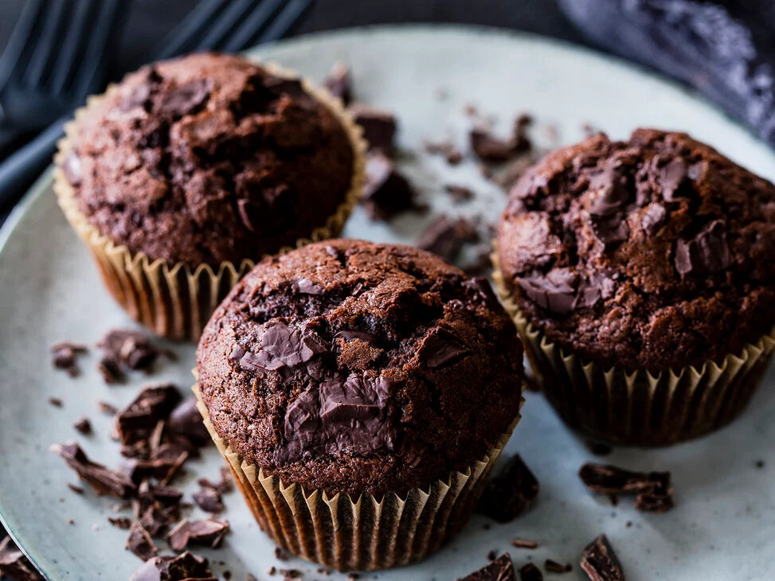

Muffins

Everyone loves them. Very fast and easy made. Our most popular Chocolate Muffin.
Ingredients
- 125g Butter
- 150g Sugar
- 2 Eggs
- 200g Dark Chocolate
- 200g flour
- 175ml Milk
Steps
- Mix butter with sugar and vanilla sugar.Stir in eggs. Roughly chop the bittersweet chocolate.
- Preheat the oven to 180 degrees (160 degrees for a fan oven).
- Mix flour with cocoa powder, salt and baking powder.
- Add the flour mixture with the milk to the butter-sugar mixture and mix well
- Fold in about two-thirds of the chopped chocolate.
- ine the wells of a muffin tin with liners. Using an ice cream scoop, divide the batter into the molds.
Scatter the remaining chopped chocolate chips over the muffins
- Bake in the preheated oven for about 25 minutes.